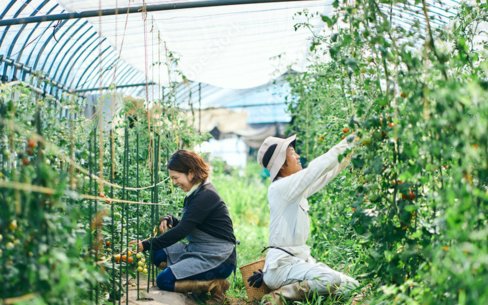
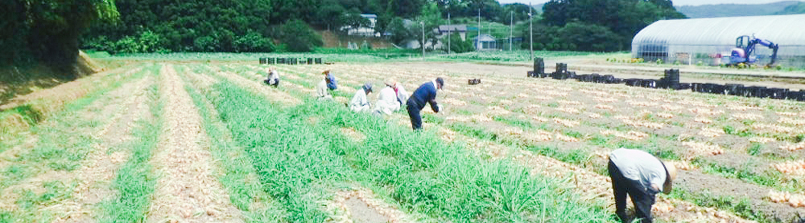
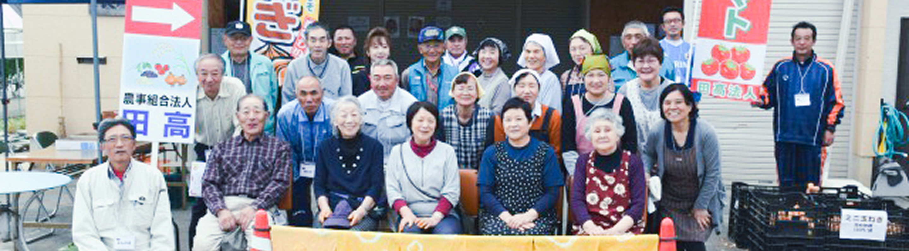

ABOUT 私たちについて
私たちは、田高地区の農家が力を合わせて運営している農業法人です。
地域の自然を活かしながら、お米や野菜を中心に、安心・安全な農作物を育てています。日々の作業は大変ですが、協力し合って楽しく農業に取り組んでいます。
たまに見学なども受け入れていますので、興味のある方はぜひお気軽にご連絡ください。田高の農業を、少しでも身近に感じてもらえたらうれしいです。

ACTIVITIES 活動記録
どんな活動をしてきたかをブログ形式でまとめました。
ぜひご覧ください。

CORPORATION 法人情報
| 法人名 | 農事組合法人 田高 |
|---|---|
| 所在地 | 〒018-0603 秋田県由利本荘市 西目町西目字大西目６５７ |
| 設立 | 平成20年3月3日 |
| 出資金 | 3,181,000円 |
| 形態 | 集落ぐるみ型 |
| 経営内容 |
|
CONTACT お問い合わせ
ご質問やご相談、見学のお申し込みなど、お気軽にお問い合わせください。
以下のボタンからお問い合わせフォームのページへお進みいただけます。